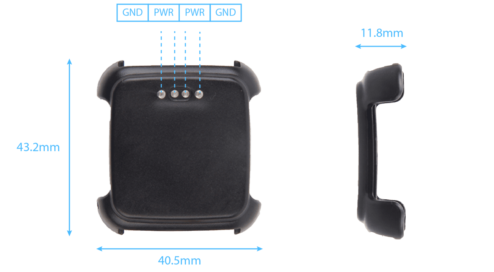
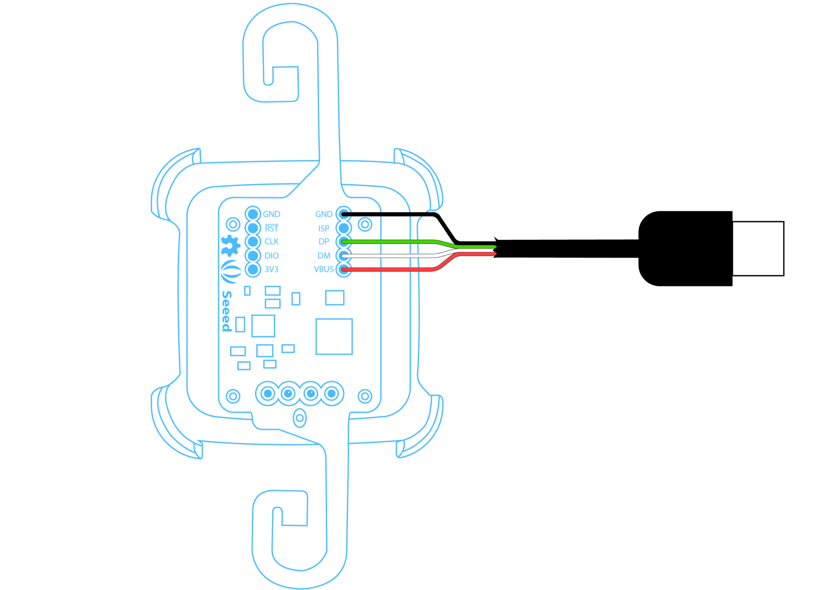
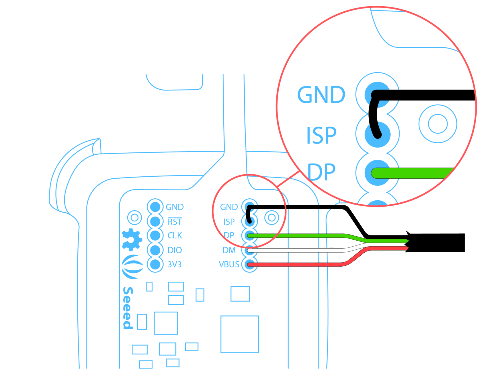

The introduction of RePhone (Xadow) modules makes your smart watch even smarter. Based on the new smart accessory port on the back of Pebble Time, we integrate the slim and small Rephone modules – Xadow GPS v2 and Xadow NFC v2, into Pebble’s existing ecosystem, to help improve its capability from the perspective of built-in electronics. Xadow Pebble Time Adapter enables the RePhone(Xadow) modules to talk to the Pebble Time via the Smartstrap interface using One-wire serial protocol.

The ‘GND’ and ‘PWR’on the back frame means you can charge your Pebble Time without taking the shell off.

For more info about this module please check on Xadow GPS v2 Wiki Page.
| Microcontroller | Kinetis KL02 |
| Core | ARM® 32-bit Cortex® -M0+CPU |
| Power Supply | 3.3 ~ 6 V (via breakout pins) |
| Flash | 32 KB |
| SRAM | 4 KB |
| Clock Speed | 48 MHz |
| Power Consumption | 18mA@Tracking, 21mA@Acquisition |
| Power Saving | Typ. 3mA@AlwaysLocateTM, 7uA@Backup
Mode, 180uA@Standby Mode |
| Channel | 22(Tracking) / 66 (Acquisition) |
| Update Rate | 1Hz(Default), up to 10Hz |
| Horizontal Position Accuracy | <2.5m CEP |
| Velocity Accuracy | <0.1m/s |
| Maximum Velocity | Max.515m/s |
| Cold/warm start with EASYTM | 215s/5s |
| Acquisition Sensitivity | -145dBm |
| Tracking Sensitivity | -163dBm |
| Operating Temperature | -40℃ to 85℃ |
| Protocols | NMEA 0183/PMTK |
| Antenna Type | Chip antenna |
| Interface | Interface with Xadow GSM+BLE through
I2C (7-bit address 0x05) |
| Dimensions | 25.37mm X 20.30mm / 1” × 0.8” |
For more info about this module please check on Xadow NFC v2 Wiki Page.
| Microcontroller | Kinetis KL02 |
| Core | ARM® 32-bit Cortex® -M0+CPU |
| Power Supply | 3.3 ~ 6V (via breakout pins) |
| Flash | 32 KB |
| SRAM | 4 KB |
| Working Current | 5mA at standby; 55mA when read/write |
| Radio Frequency | 13.56 MHz |
| Supported protocols | ISO/IEC 14443 Type A and ISO/IEC 14443 Type B |
| Max Operating Distance | ~28mm depending on the current antenna size |
| Dimensions | 25.37mm × 20.30mm / 1” × 0.8” |
| Voltage | 3.3 V |
| Dimensions | 25.37mm × 20.30mm / 1” × 0.8” |
In daily use the modules are evenly placed at each side of the watch, and interconnected with FPC cables. The connections between the module and the adapter are specially designed to be an extendable form so that unexpected connection pull-off may be avoided. The charging ports of Pebble Time are still accessible on the back of adapter for daily charges of watch.
A schematic drawing of the assembling process of the RePhone Strap Kit for Pebble Time is given below
You can follow the instructions to download the Xadow APP for Pebble Time, access the GPS information and Tag ID on your Pebble Time.
The Demo App can be downloaded from https://github.com/Seeed-Studio/Xadow_Strap/raw/master/build/pebbleapp_jack.pbw. You can download it from your smart phone or send it from your PC to smart phone. Then select to open it with "Pebble Time" App in your phone. You will have an option to install the demo App into your Pebble Time.
File:Xadow Pebble Time Adapter app download.JPG
The firmware of the adapter implements the protocol described on pebble's official documentation: http://developer.getpebble.com/guides/hardware/smartstrap-protocol/
So the resources which can be called from the watchapp side are as following:
| Service | Attribute | R/W | Data Type | Data |
|---|---|---|---|---|
| 0x0 Raw Data | 0x0 Raw Data | RW | uint8 *buffer | No handler in adapter side, leave the expandability for adapter firmware programmer |
| 0x2003 Battery Service | 0x1001 Get voltage of the battery | R | uint16 | The voltage of the battery for strap in Volt with a precision of 1/100. For example, the voltage is 3.70V, which would be specified as 370. |
| 0x2003 Battery Service | 0x1002 Enable or disable charging pebble with the battery of strap | RW | uint8 | 0: Don't charge pebble. 1: Charge pebble. |
| 0x2001 Location and Navigation Service | 0x0001 Location | R | sint32[2] | The current longitude and latitude in degrees with a precision of 1/10^7. The latitude comes before the longitude in the data. For example, Pebble HQ is at (37.4400662, -122.1583808), which would be specified as {374400662, -1221583808}. |
| 0x2001 Location and Navigation Service | 0x0003 Speed | R | uint16 | The current speed in meters per second with a precision of 1/100. For example, 1.5 m/s would be specified as 150. |
| 0x2001 Location and Navigation Service | 0x1001 Altitude | R | uint16 | The current altitude in meters with a precision of 1/100. For example, 100m would be specified as 10000. |
| 0x2001 Location and Navigation Service | 0x0101 GPS Satellites | R | uint8 | The number of GPS satellites (typically reported via NMEA. Note that this number is for satellites in view. |
| 0x2001 Location and Navigation Service | 0x0102 GPS Fix Quality | R | uint8 | The quality of the GPS fix (reported via NMEA). The possible values are listed in the NMEA specification. |
| 0x1E01 NFC Service | 0x1001 Get UID of a NFC tag | R | uint8 * | The UID will be returned with variable length which can be indicated in the SmartstrapReadHandler with parameter length. This attribute can be notified in SmartstrapNotifyHandler. |
| 0x1E01 NFC Service | 0x1002 Read NDEF Data | R | uint8 * | The NDEF data will be returned with variable length which can be indicated in the SmartstrapReadHandler with parameter length. |
| 0x1E01 NFC Service | 0x1003 Write NDEF Data | W | uint8 * | Write a uint8 buffer into NFC tag |
| 0x1E01 NFC Service | 0x1004 Erase NDEF Data | W | any type | Write any content or empty to trigger the erasing. |
The source code of the demo pebble app can be downloaded at github: https://github.com/Seeed-Studio/Xadow_Strap
This app is only for demonstration of partial attribute call, please feel free to imagine your own fantastic pebble app based on the ability of GPS, NFC and more on.
The adapter is built with LPC11U35 and running mbed software inside. The initial firmware is located at mbed.org. Please take a look at https://developer.mbed.org/teams/Seeed/code/xadow_smartstrap_for_pebble/
The eagle schematic of the adapter can be downloaded here: http://www.seeedstudio.com/wiki/images/f/f8/Xadow_Pebble_Time_Adapter.rar
After building the firmware binary, you can follow the steps below to flash the binary into the adapter.
1) Hacking a USB Cable and solder the wires to the soldering pads accordingly

2) Make sure the battery disconnected and plug the USB into PC.
3) Short the "ISP" and "GND" pins.

4) Plug the battery on to power on the adapter
5) There will be a usb drive at your PC, open it and delete anything inside the disk, then copy the firmware binary into the disk.
6) Power off then on, the firmware is updated.

We’ve been looking for a better place where our backers (RePhone Users) can sit together, warmly and comfortably, have conversations about RePhone, discuss technical problems, share ideas/projects, and give feedback on the modules’ development in the future. And then here we go, the RePhone Community.
Now join us in the RePhone Community! Together we seek answers, make interesting stuff, care about each other, and share our experiences.
Some frequently asked questions in RePhone Community are collected and answered to the topic "Frequently Asked Questions of RePhone (FAQ)" , the topic will be kept updating whenever a new FAQ comes out.
The schematic diagram of Xadow Pebble Time Adapter is provided in the following link:
Copyright (c) 2008-2016 Seeed Development Limited (www.seeedstudio.com / www.seeed.cc){kind=link}